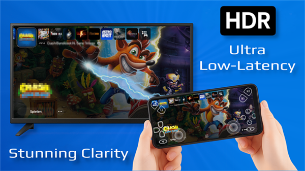
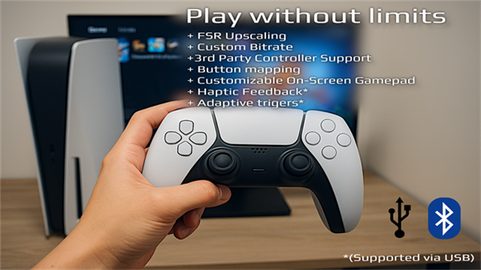

用了三年才发现，PSPlay 藏着这五个没人讲的冷门功能
PSPlay 不只是手机上远程玩主机的小工具，挖到底层设置和偏门入口，藏着五个连官方都没怎么宣传的进阶玩法，每一个都能让远程游玩体验跨一个档次。
你以为 PSPlay 就是个替代官方 Remote Play 的手机 App——连上 PS5、选个游戏、躺沙发上玩？我也是这么以为的，直到翻了它设置菜单里那些灰色的、不仔细看根本注意不到的选项，又去网上搜了一圈发现居然没人讲这些东西。
这篇就说五个我自己翻出来的隐藏功能，从硬件适配到软件开关，每一个都有明确的使用场景和操作路径，不是那种传得神乎其神的"传说功能"。
电视版：官方不做但 PSPlay 做了
先讲个最大的——PSPlay 专门做了 Android TV 和 Apple TV 的适配版本。官方的 PS Remote Play App 原生不支持电视系统，想在电视上远程玩主机，要么侧载官方 APK 折腾，要么换别的方案。
去PSPlay官网看的话，Android TV 上有三种装法：先从官方下载拿好 APK 文件拷 U 盘插电视装、ADB 调试推送、或者部分索尼/TCL 机型的 Play 商店里直接搜得到。Apple TV 更简单，App Store 里搜 PXPlay 就行，原生适配 tvOS。
装完之后用蓝牙连个 DualSense 或 Xbox 手柄，遥控器的 D-pad 负责导航，手柄负责玩。电视大屏幕看串流画面确实爽，但有个坑要提一下——Android TV 处理 1080p 60fps 可能不稳，卡的话降到 720p 30fps 就流畅了，再配合 FSR 锐化补一下画面密度，肉眼差别没那么大。

Vulkan 渲染：藏在流媒体设置里的延迟杀手
大多数人装完 PSPlay 从来没进过设置里的流媒体设置页，错过了一个直接影响手感的选项——渲染模式。
默认情况 PSPlay 用的是 OpenCL 或 CPU 做视频解码，但你进设置 → 流媒体设置 → 渲染模式，会发现一个 Vulkan 选项。开启之后用 GPU 直接做视频解码，比传统方式少了一层调度，延迟能再降 5 到 15ms。
别小看这几毫秒——20ms 和 10ms 的延迟差，格斗游戏里的连招窗口就是另一个故事了。但这里也有个坑：部分低端设备开 Vulkan 反而不稳定，画面会花或者直接崩溃，所以开了之后先找个画面简单的游戏测试 10 分钟，确认没问题再长期用。
FSR 锐化：大屏上的画质补丁
FSR（FidelityFX Super Resolution）在 PSPlay 里是个开关，不是自动的。它的作用很简单：把低分辨率画面做锐化插值，在大尺寸屏幕上减少像素感。
电视上用 720p 串流时，不开 FSR 的话 55 寸以上的电视能看到明显的像素颗粒；开了之后边缘锐利很多，跟原生 1080p 的观感差距缩小一大截。代价是会增加几毫秒的处理延迟，但如果你是 RPG 或策略游戏玩家，这点延迟换画质绝对划算。
操作路径：设置 → 流媒体设置 → FSR 开关。
USB 有线手柄：延迟直接砍到 1-3ms
这个功能藏得真深——PSPlay 支持 USB 有线手柄直连手机或平板，只需要一根 OTG 转接线。
蓝牙手柄的典型输入延迟是 8-15ms，听起来不大，但跟 1-3ms 的有线比，在 FPS 或格斗游戏里就是"我按了但角色慢半拍"的体感。准备一根 USB-C 转 USB-A 的 OTG 线，把手柄用 USB 线接上去再插到手机上，PSPlay 会自动识别有线连接的手柄，不需要额外设置。
注意两点：一是部分手机的 OTG 口供电有限，手柄可能断连，换个带供电的 OTG 线或者给手柄单独插个充电器；二是有线手柄的震动反馈走的是 USB 通道，比蓝牙更灵敏，这个是额外惊喜。

自动远程连接：5.0 版本才加的懒人福音
以前我远程连家里主机要么手动配端口转发（路由器后台改一堆规则），要么查公网 IP（运营商动态 IP 隔几天就变），烦得要死。直到 PSPlay 5.0 版本加了自动远程连接——利用 PSN 官方的基础设施在公网自动打洞，不用配任何路由器设置。
具体配置细节在PSPlay文档里有完整说明，简单来说就是主机档案的设置页找「自动远程连接」开关，打开后主界面点 Remote Connect 选 Automatic，等它自己建立连接就行。
前提条件有三个：主机已通过 PSN 登录方式注册（手动注册的不行）、主机 NAT 类型不能是 3（NAT 3 的话公网打洞基本没戏）、主机固件最新。满足这三个条件的话，这个功能的成功率比手动端口转发高多了，尤其是跨 NAT 和防火墙的时候。
别踩的两个坑
讲了好的，也提两个我踩过的坑。
第一个是缓冲调太小会跳帧。PSPlay 的缓冲区大小影响延迟和稳定性的平衡，我一开始为了最低延迟把缓冲拉到最小，结果网络稍微抖一下画面就卡顿掉帧，来回调了四五次才找到自己网络的临界值——赛车游戏对缓冲变化最敏感，RPG 可以调小一点。
第二个是电视侧的运动增强。很多电视默认开着"运动增强""图像后处理"这些功能，画面看着舒服但延迟会增加 30-50ms。在电视设置里关掉这些，再配个有线手柄，客厅远程玩主机的体验能上一个台阶。
把它用透
PSPlay 能火起来不是没道理——比官方 App 延迟更低、支持平台更广、设置项更细。但大多数人只用了它最表层的功能，那些藏在设置深处的开关和偏门的硬件适配，才是它真正比官方方案强的地方。
把电视版装上、Vulkan 开起来、手柄接根 OTG 线、远程连接改自动——这五步走完，远程游玩的体验跟默认设置比，完全是两个软件。这些整理好的资料我也分别同步到了GitHub、Gitee 和 GitCode 三个仓库，方便不同地区的朋友随时查阅。